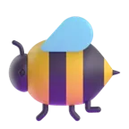

My English World
Book 4 · My Picture Dictionary
Unit 41
In the Garden
Tap any picture or sentence to listen.
🖼️ Look and say
sunflower
tree
seed
plant

bee
butterfly
snail
worm
▶ Play all words
💬 Words in sentences
The sunflower is very tall.
🔊
Plant the seed in the soil.
🔊
Water the plants every day.
🔊
The worm lives in the ground.
🔊
▶ Play all sentences
‹ Camping
All units
Fairy Tales ›